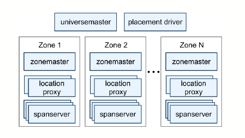

Spanner
Spanner: Google’s Globally-Distributed Database
Google’s scalable, multi-version, globally-distributed and synchronously-replicated database.
Introduction
- Bigtable is hard to use for applications need complex, evolving schemas or strong consistency in wide-area replication, so Spanner evolved into a temporal, multi-version, semi-relational database, providing distributed transactions over geographically distributed data.
- With a new TrueTime API that exposes clock uncertainty, Spanner assigns globally-meaningful commit timestamp to even distributed transactions.
- Spanner shards data across many sets of Paxos state machines in data centers spread all over the world.
- Workload is dominated by read-only transactions (Table 6).
- Strong consistency (External consistency / linearizability / serializability)
Basic Organization
1 2 3 4 5 6 7 8 9 10 11 12 | |
Replication
- Replication managed by Paxos; one Paxos group per shard.
- Replicas are in different data centers.
The benefit of shard across data center
- Sharding allows huge total throughput via parallelism. Datacenters fail independently -- different cities.
- Clients can read local replica -- fast! Can place replicas near relevant customers.
- Paxos requires only a majority -- tolerate slow/distant replicas.
Challenges
- Read of local replica must yield fresh data. So it have the same overhead as Write request, vote via majority, It eliminate the benefit of locality.
- A transaction may involve multiple shards -> multiple Paxos groups.
- Transactions that read multiple records must be serializable. It means it need the assistance from Xaction Coordinator.
System Architecture

- A Spanner zone has one zonemaster and many spanservers. The former assigns data to spanservers; the latter serve data to clients.
- A spanserver is responsible for 100~1000 tablets. Each tablet contains a bag of mappings from multiple partitions of the row space(data colocation). A tablet's state is stored in a set of B-tree like files and a write-ahead log on Colossus.
- A spanserver implements a Paxos state machine on each tablet; each Paxos state machine stores metadata and log in corresponding tablet.
- At every replica that is a leader, each spanserver implements a lock table and a transaction table to support distributed transactions(two-phase commit on mutliple Paxos groups).

TrueTime
- Main method returns an interval [earliest, latest] that is guaranteed to contain the absolute time when is invoked. and are convenience wrappers.
- TrueTime uses two forms of time references, GPS and atomic clocks, as they have different failure modes.
- TrueTime is implemented by a set of time master machines per data center and a time slave daemon per machine.
- Each daemon polls a variety of masters, apply Marzullo's algorithm to detect liars and synchronize the local machine clock to non-liars.
- Between synchronizations, a daemon advertises a slowly increasing time uncertainty (average 4ms in production) derived from worst-case local clock drift, time master uncertainty and communication delay to the time masters.
Concurrency Control
- Spanner supports read-write transactions, read-only transactions and snapshot reads. Read-only transactions and snapshot reads execute at a specific timestamp without locking.
- Spanner maintains following invariants:
- disjointness:* within a Paxos group, each Paxos leader's lease interval is disjoint from every other leader's.
- monotonicity: within a Paxos group, Paxos writes have monotonically increasing timestamp.
- external consistency: if the start of a transaction occurs after the commit of a transaction , then the commit timestamp of must be greater than the commit timestamp of .
- For RW transactions, the coordinator assigns a commit timestamp no later than computed after receiving the commit request, and waits until is true to apply the commit("commit wait").
- Sets the commit time to since TT.now() returns a range time is between, exclusive so is guaranteed to not have occured.
- Keeps calling until is greater than above commit time.
- For RO transactions and snapshot reads, every replica tracks for the maximum at which the replica is up-to-date, which depends on the Paxos state machine and if there are prepared but not committed transactions.
R/W Transactions
1 2 3 4 | |
We don't want any read or write of x or y sneaking between our two ops. After commit, all reads should see our updates.
Two-phase commit (2pc) with Paxos-replicated participants
1 2 3 4 5 6 7 8 9 10 11 12 13 14 15 16 17 18 19 20 21 22 | |
- Locking (two-phase locking) ensures serializability.
- 2pc widely hated b/c it blocks with locks held if TC fails.
- Replicating the TC with Paxos solves this problem!
R/O Transactions
Eliminates two big costs from R/O transactions
- Read from local replicas, to avoid Paxos and cross-datacenter msgs.
- But note local replica may not be up to date!
- No locks, no two-phase commit, no transaction manager.
- Again to avoid cross-data center msg to Paxos leader.
- And to avoid slowing down r/w transactions.
- Tables 3 and 6 show a 10x latency improvement as a result!
Achieves this through Snapshot Isolation
- Synchronize all computers' clocks (to real wall-clock time).
- Assign every transaction a time-stamp.
- r/w: commit time.
- r/o: start time.
- Execute as if one-at-a-time in time-stamp order.
- Even if actual reads occur in different order.
- Each replica stores multiple time-stamped versions of each record.
- All of a r/w transactions's writes get the same time-stamp.
- An r/o transaction's reads see version as of xaction's time-stamp.
- The record version with the highest time-stamp less than the xaction's.
Obviously we can't synchronize all computer clocks, so TrueTime is used to give bounds of certainty.
Perspective
- Snapshot Isolation gives you serializable r/o transactions.
- Timestamps set an order.
- Snapshot versions (and safe time) implement consistent reads at a timestamp.
- Xaction sees all writes from lower-TS xactions, none from higher.
- Any number will do for TS if you don't care about external consistency.
- Synchronized timestamps yield external consistency.
- Even among transactions at different data centers.
- Even though reading from local replicas that might lag.
Why is all this useful?
- Fast r/o transactions:
- Read from replica in client's datacenter.
- No locking, no two-phase commit.
- Thus the 10x latency improvement in Tables 3 and 6.
- Although:
- r/o transaction reads may block due to safe time, to catch up.
- r/w transaction commits may block in Commit Wait.
- Accurate (small interval) time minimizes these delays.